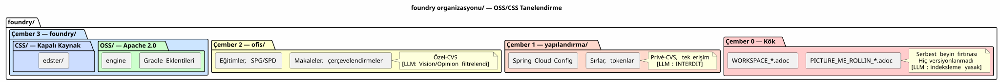

OSS/CSS Granülarizasyonu — `foundry/` Dizinini Neden İkiye Ayırdım
Yayınlandı: 03 May 2026
foundry/— workspace’imin kodunu barındıran fonksiyonel alan — 18 proje içeriyor. Sekizi Apache 2.0 altında açık kaynaktır. Sadece biri kapalı kaynak — Edster SaaS. Aylarca bu dokuz proje bir arada var oldu aynı klasörde, yalnızca … ile ayrılmış; hiçbir şey yok. Genel/özel durumları kafamdaki bir bilgiydi, dosya sistemindeki değil.
Ve sonra bir RAG bağlamak istedim. Ve işte o an, her şey çöktü.
Gerçekleşmesi Beklenen Kaza
Nisan 2026’da, slider-gradle için pgvector RAG’ı uygulamaya başladım. Prensip: tüm … depolarını indekslemek`foundry/`, üretmek embedding’ler ve bunları LLM’in bağlamına enjekte etmek, böylece onun bir dosyanın "algılanışı`foundry/`Lütfen çevrilecek metni sağlayın.
Pipeline basitti:
val repos = fileTree(rootDir) {
include("**/*.adoc", "**/*.kts", "**/*.kt", "**/*.json", "**/*.yml")
}
val chunks = repos.map { chunk(it) }
val embeddings = chunks.map { embed(it) }
pgvector.insert(embeddings)Basit. Etkili. VetehlikeliLütfen çevrilecek metni sağlayın.
Çünkü bu`fileTree`arasındaki farkı ayırt etmez`plantuml-gradle/` (Apache 2.0, genel) ve`edster/`(kapalı kaynak, özel). Her şeyi yutar. Ya bir gün bu embedding’leri yayınlarsam — bir panelde, bir yanıtta LLM, bir eğitim veri setinde — Edster’ın tescilli kodu sızıyor.
|
Sorun, bir LLM’nin kapalı kaynaklı kod okuması değil. Sorun, bu kodun genel bir vektör gömmesine (embedding) girmesi — geri döndürülemez, silinemez, denetlenemez. |
Asıl Soru
LLM’nin kod sızdırması nasıl önlenir?" değil. "nasıl kaçışı yapısal olarak imkansız hale getirmek mi?
Yanıt bir prompt değil. Yanıt, dosyayı ikiye bölmektir.
Çözüm: OSS/ ve CSS/
Önce:
foundry/
├── plantuml-gradle/ ← public
├── bakery-gradle/ ← public
├── magic-stick/ ← public
├── edster/ ← PRIVÉ
├── slider-gradle/ ← public
└── ... ← mélange invisibleSonra:
foundry/
├── OSS/ ← tout est Apache 2.0
│ ├── plantuml-gradle/
│ ├── bakery-gradle/
│ ├── magic-stick/
│ ├── slider-gradle/
│ └── ...
└── CSS/ ← tout est closed source / private
└── edster/Le `fileTree`haline gelir:
val ossRepos = fileTree(File(rootDir, "OSS")) {
include("**/*.adoc", "**/*.kts", "**/*.kt", "**/*.json", "**/*.yml")
}
val cssRepos = fileTree(File(rootDir, "CSS")) {
include("**/*.adoc", "**/*.kts", "**/*.kt", "**/*.json", "**/*.yml")
}
// Embeddings publics — OSS seulement
pgvectorPublic.insert(ossRepos.map { chunk(it) }.map { embed(it) })
// Dataset fine-tuning privé — CSS seulement
fineTuningDataset.insert(cssRepos.map { chunk(it) }) // jamais publié|
Genel RAG asla görmez`CSS/`. Kapalı kaynak kod bir veri setini besliyor ince-tuning’den yoksun — evimden asla dışarı çıkmayan dahili bir model. La ayrım mekaniktir, deklaratif değildir. |
Neden "Public" ve "Private" değil de "OSS" ve "CSS
OSS (Open Source Software - Açık Kaynaklı Yazılım) ve CSS (Closed Source Software - Kapalı Kaynaklı Yazılım) akronimlerinin seçimi kasıtlıdır:
-
Public"/"Private" şunu tanımlar:görünürlük(GitHub’ın gördüğü)
-
OSS"/"CSS" şunu tanımlar:doğakod (LLM’nin bilmesi gerekenler)
GitHub görünürlüğü, uzak deponun bir meta verisidir. Kodun doğası içeriğin bir özelliği. LLM, GitHub API’sine erişime sahip değil — ancak erişimi var dosya sistemine.CSS/`ona şöyle dedi "dikkat, bu kod lisanslı değil bir `libre okumaya gerek kalmadan`LICENSE`veya bir … parse etmek`package.json`Lütfen çevrilecek metni sağlayın.
|
Klasör adı, verebileceğiniz en sağlam üst veridir bir LLM. Yanlış ayrıştırılamaz, görmezden gelinemez veya yanlış yorumlanamaz. LLM görür`CSS/edster/`dosya yolunda — o bilir. |
Tam Ağaç — Üç Değil, Dört Bölge
OSS/CSS granülizasyonu, üç bölgeli ontolojiyi tamamlar. Bölge `foundry/`1’den 2 fonksiyonel alt bölgeye geçer:

| Bölge | GDPR | Genel RAG İndeksleme | Fine-tuning Veri Kümesi | | Kök | Seviye 0 — Mahrem | ✗ | ✗ | |configuration/| Seviye 1 — Kısıtlı | ✗ | ✗ | |office/| Seviye 2 — İş Birlikçi | ✓ Filtrelendi | ✓ Filtrelendi | |foundry/private/| Seviye 3 — Koşullu Açık | ✗ | ✓ Özel | |foundry/public/| Seviye 4 — Ana dil | ✓ Serbest | ✓ Genel |
Özel Durum: cheroliv.com
Hazır gelmişken, başka bir tutarsızlığı da düzelttim. Sitem cheroliv.com`yaşıyordu`foundry/`bir yazılım projesi gibi tam teşekküllü — kendi Gradle build’i, kendi CI’ı, kendi yönetişim.agents/`Lütfen çevrilecek metni sağlayın.
Ancak blog yazıları kod değildir. Bunlar verilerdir Cercle 2’nin editöryal içerikleri — tıpkı …'nın çerçevelendirmeleri gibi`office/pilotage/` veya … eğitimleri`office/formations/`Lütfen çevrilmesini istediğiniz metni sağlayın.
AVANT APRÈS
foundry/ office/
cheroliv.com/ sites/
site/jbake/content/blog/ cheroliv.com/
2026/0117_....adoc 2026/0117_....adocDeğişenler:
-
Ürünler şurada:`office/`→ Cercle 2 gizliliği
-
Görev`publishSite`bir
capabilityhaline gelir`engine`
aracılığıyla`bakery-gradle`— eklenti bir`FileTree`, bilmiyor makalelerin …-den geldiği`office/`
-
Tek bir CI, tek bir yönetişim — sıfır tekrarlama
-
Vision/Opinion sınıflandırıcı (Kural 2bis) otomatik olarak uygulanır:
içindeki makaleler`office/`yayınlanmadan önce filtrelenir
bakery-gradle S’En Fiche
Ve güzel olan da bu. Eklenti`bakery-gradle`değiştirilmedi. Bir AsciiDoc içerik dizini alır, HTML oluşturur, push eder GitHub Pages üzerinde. Bu dizinin adının`site/jbake/content/` ou office/sites/cheroliv/— eklentinin umurunda değil.
// engine/build.gradle.kts
task("publishBlog") {
doLast {
val articles = fileTree("../../office/sites/cheroliv/2026/")
bakery.generate(articles) // ← bakery ne sait pas d'où ça vient
}
}Arayüz sözleşmesi bir Gradle görevidir. Bir REST API değildir. Bir webhook değildir. Bir görev — tipli, test edilebilir, yerel olarak ve CI’da yürütülebilir.
Ajan Yönetişimi Üzerindeki Etki
OSS/CSS granülizasyonu, ajan yönetişimini üç noktada değiştirir:
-
Herkese açık RAG : indeksleme kapsamı şuradan şuraya geçiyor`foundry/**`
à foundry/public/+office/Vision/. Kapalı kaynak kodlu (closed source) kod görev yapılandırması nedeniyle dizinden hariç tutulmuştur, istem nedeniyle değil.
-
Knowledge Graph : graphify-gradle iki graf üretir:
Lütfen çevrilecek metni sağlayın.office/graph.json(public) — OSS artifaktları + office/Vision arasındaki ilişkiler Lütfen çevrilmesini istediğiniz metni sağlayın.configuration/graph_private.json(gitignored, özel) — arasındaki ilişkiler CSS artifaktları, hiç yayınlanmadı
-
Veri kümesi ince ayarı :`codebase-gradle`artık iki kaynağa sahip:
Lütfen çevrilecek metni sağlayın.OSS/→ genel veri kümeleri (topluluk modelleri, benchmarklar) Lütfen çevrilecek metni sağlayın.CSS/→ özel veri kümeleri (dahili model, sahipli ince ayar)
Neler Kazandığımız (Ve Neler Kaybettiğimiz)
Öncesi (düz dosya) |
Sonra (OSS/CSS + office/sites) |
|
|
RAG her şeyi ayrım gözetmeksizin indeksler |
RAG indeksleme`OSS/`+`office/Vision`yalnızca |
Bir projenin açık kaynaklı olup olmadığını bilmek imkansız |
Yol`OSS/` ou `CSS/`söylenen |
cheroliv.com’un kendi CI’sı, kendi yönetişimi var |
CI ve yönetişim |
Blog yazıları bir "code" deposundadır |
Blog yazıları şurada yer alıyor`office/sites/`— veri, kod değil |
Kamu açık embedding’lerde kapalı kaynak kod sızıntısı riski |
Yapısal olarak imkansız —`CSS/`RAG kapsamı dışı |
Tek maliyet: bir`git mv`17 OSS deposu üzerinde genel + bir refactor du build.gradle.kts de engine. Bu soğuk bir migrasyondur — yolculukta veri yok, etkilenen kullanıcı yok.
Sonuç: Fiziksel Sinyal Yazılımsal Sinyali Yener
Bu öğleden sonra yaptığım şey, görünmez bir kuralı değiştirmekti bölgede görünür bir ayrılma ile`foundry/`. Önceden, şunları yapmanız gerekiyordu bilmek ki`edster/`kapalı kaynaklıydı. Şimdi, görüyorsunuz — klasörün adı`CSS/`Lütfen çevrilecek metni sağlayın.
Bu, Unix izinleri, ağ VLAN’ları veya bir veri tabanındaki yangın kompartımanları. Güvenlik şunları yapmamalıdır hatırlamanız gereken bir bilgi olmalıdır. Bir özellik olmalıdır fizikselsistemin.
OSS/CSS granülizasyonu, bu prensibin alanındaki karşılığıdır LLM yönetişiminin. LLM’in Edster’ın olduğunu bilmesine gerek yok gizli. Onu indeksleyemez durumda olması gerekiyor.
Ve bu tam olarak`CSS/`garanti eder.